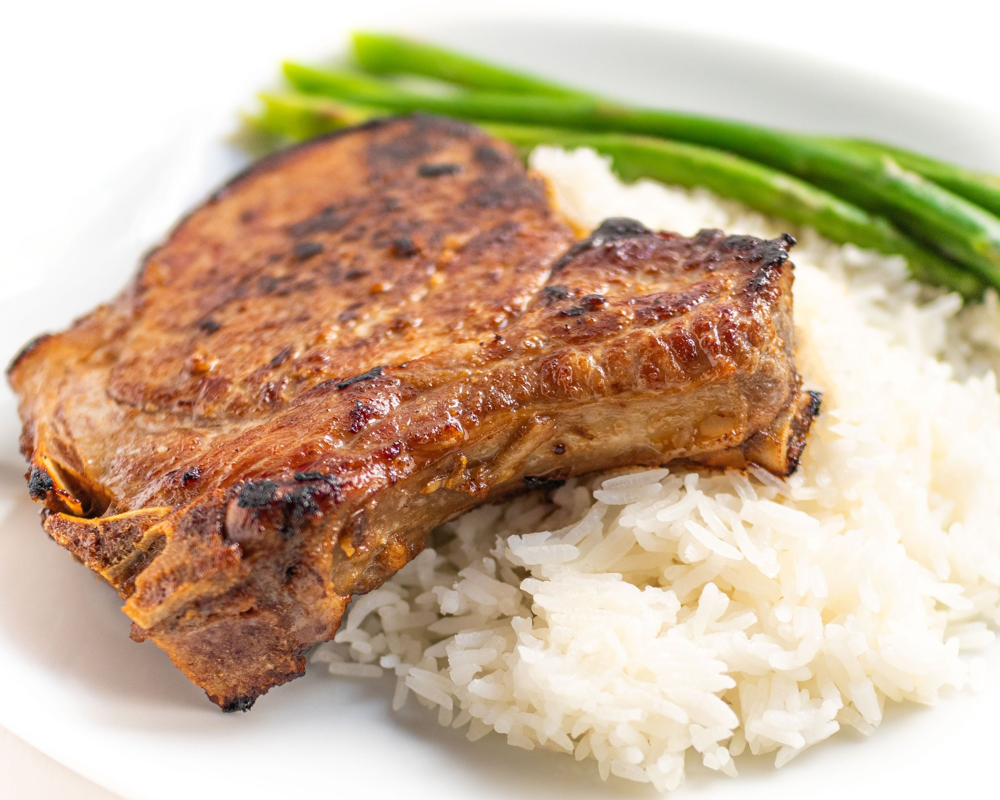
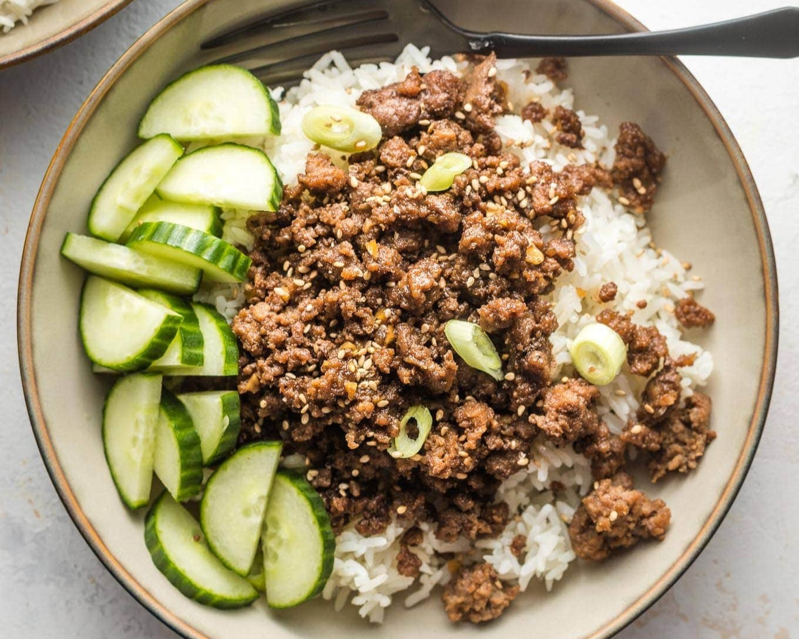
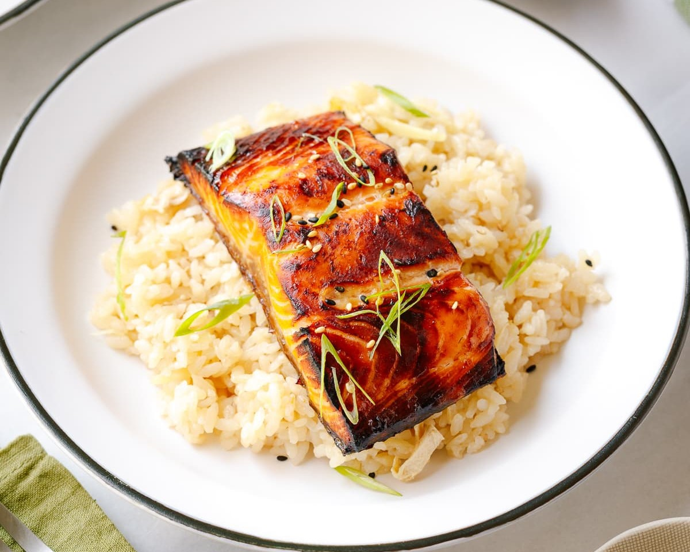

Recipes
Oven-roasted pork chops

Time: 1hr 30min
Yield: 5 servings
Ingredients
- 3 lbs bone-in pork chops (1-inch thick)
- ¼ cup soy sauce
- 2 tablespoons granulated sugar
- 1 teaspoon rice vinegar
- ¼ teaspoon ground black pepper
- 5 garlic cloves (peel and mince)
Instructions
- In a small bowl, make the marinade by combining soy sauce, sugar, rice vinegar, ground black pepper, and minced garlic. Marinate pork chops for at least one hour. The longer the better or overnight in the fridge, covered, for better results.
- Line a baking sheet with foil or parchment paper to reduce clean-up. Add marinated pork chops in a single layer.
- Preheat your oven to 375°F and bake for 20 minutes. Bast with the drippings in between to keep the pork chops moist. Then switch to broil on high or 500°F to create your desired crust (about a few seconds to 1 minute per side).
Hainanese chicken rice
Time: 15min prep + 20min cooking in the rice cooker
Yield: 2-3 servings
Ingredients
- 1 cup Jasmine rice
- 2-3 boneless chicken thighs
- 1 cup chicken broth or water
- 1 inch knob ginger sliced thinly
- 3 bunches scallions chopped
- 4 crushed garlics
Marinade:
- 1/2 Tbsp tumeric
- 1 Tsp salt
- 1 Tsp Sesame oil
- pinch of salt and pepper
- 3 Tbsp water
Optional scallion oil:
- 2 stalks sliced scallion, thinly sliced
- ¼ cup canola oil
Instructions
- Marinade chicken thighs for 10 min.
- Wash 1 cup rice and combine it in the rice cooker with equal portion of broth or water (1 cup).
- Layer on the crushed garlic and giner
- Add the chicken
- Top with green scallions and chilis
- Press “cook.” Choose “Mixed rice” option if available.
- Garnish with microwaved scallion oil
Korean ground beef

Time: 20min
Yield: 4 servings
Ingredients
- 1 pound lean ground beef 90% lean
- 3 garlic cloves minced
- 1/4 cup packed brown sugar
- 1/4 cup reduced-sodium soy sauce
- 2 teaspoons sesame oil
- 1/4 teaspoon ground ginger
- 1/4 teaspoon crushed red pepper flakes
- 2 cups hot cooked white or brown rice
- sliced green onions and sesame seeds for garnish (optional)
Instructions
- In a large skillet cook the ground beef and garlic breaking it into crumbles over medium heat until no longer pink. Drain the grease.
- In a small bowl whisk brown sugar, soy sauce, sesame oil, ginger, red pepper flakes and pepper. Pour over the ground beef and let simmer for another minute or two.
- Serve over hot rice and garnish with green onions and sesame seeds.
Miso salmon

Time: 1hr 15min
Yield: 2-3 servings
Ingredients
- 2 skin-on salmon fillets
- 2 Tbsp miso (use any type of miso; I used Hikari Miso Organic White Miso)
- 1 Tbsp sake
- 1 Tbsp mirin
- 1 Tbsp soy sauce
- ¼ tsp toasted sesame oil
- ½ tsp toasted white and black sesame seeds (optional)
- 1 green onion/scallion (chopped)
Instructions
- Before You Start: Please note that this recipe requires a marination time of 1–2 hours.
- Gather all the ingredients. Check your 2 skin-on salmon fillets for scales and tiny bones. For bones, run your fingers along the flesh surface and sides to feel for the hard tips of any bones and pull them out with fish boning tweezers. For scales, run your fingers back and forth across the skin to find any scales and scrape them off with the flat edge of a knife.
- In a large bowl or flat tray, mix the marinade ingredients: 2 Tbsp miso, 1 Tbsp sake, 1 Tbsp mirin, 1 Tbsp soy sauce, and ¼ tsp toasted sesame oil.
- If your salmon is not cut into fillets yet, cut it into individual portions so that they cook faster and evenly. The typical American serving size is 6 oz (170 g). Then, place the salmon in the bowl with the marinade, skin side up.
- Spoon the marinade on top of the salmon, making sure to coat the sides and skin. Cover and keep it in the refrigerator for 1–2 hours for fillets up to 1 inch (2.5 cm) at the thickest part. Marinate for 3 hours for a thicker cut. Tip: This fish is marinated for a short time, unlike Black Cod with Miso. I don’t recommend marinating the salmon overnight, as it will get quite salty.
- Preheat the oven to 425°F (218ºC) with a rack placed in the center position. For a convection oven, reduce the cooking temperature by 25ºF (15ºC). Next, take the marinated salmon out of the refrigerator and remove any excess marinade completely from the fish; otherwise, the miso may burn during baking. You can scrape off the marinade with an offset spatula or butter knife if you‘d like.
- Place the salmon pieces skin side down on a baking sheet lined with parchment paper. If you‘re using an oven probe, insert it into the thickest part of the flesh.
- Transfer the baking sheet to the oven and attach the probe (if using) to the oven. Bake the salmon until the thickest part of the fillet registers an internal temperature of 125–130°F* (52–54ºC), for roughly 18–20 minutes. You do not need to flip the salmon during baking. If you prefer medium rare, you can stop cooking at 120ºF (49ºC). Tip: My recommended baking time is 5 minutes per ½-inch (1.3-cm) thickness of salmon measured at the thickest part.
- Take it out from the oven. Test if the salmon is cooking by flaking the flesh. If it flakes easily, it’s cooked through. To char (optional): You can broil the salmon to give it a nice char, if desired. When the salmon is getting close to the desired internal temperature, remove the probe from the salmon and oven. Then, change the oven setting to Broil on High (550ºF/288ºC). Keep the oven rack placed in the center position, 9 inches (23 cm) away from the top heating element. Then, broil the salmon for 3 minutes or until the surface is blistered and browned a bit. Note that the salmon will continue to cook while broiling; therefore, don't wait too long to switch to broil.